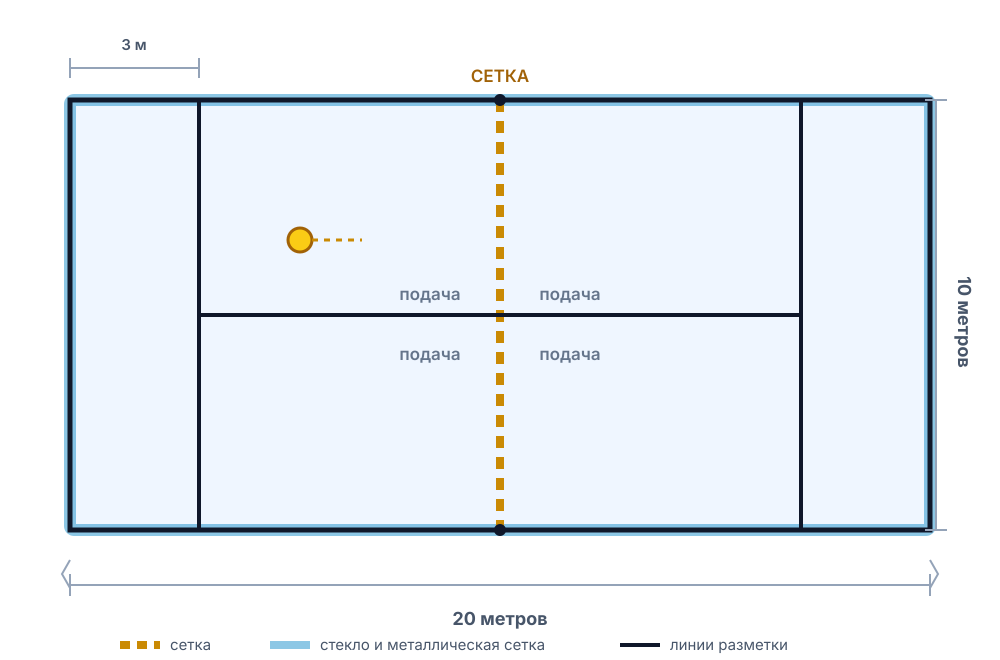

Правила падела простыми словами
Падел устроен проще, чем кажется: те же теннисные очки, подача снизу и стены, которые остаются в игре. Ниже — всё, что нужно, чтобы уверенно провести первый матч.
Корт и инвентарь
Падел играют на закрытом корте размером 20 × 10 метров. По периметру — стеклянные панели и металлическая сетка, между половинами — сетка. Покрытие обычно искусственная трава, реже — бетон или грунт.

Размер корта
Площадка закрыта стеклом и сеткой. Высота сетки — 88 см по центру и 92 см у стоек.
Линия подачи
Проходит параллельно задней стене. Подавать нужно из-за неё, по диагонали.
Ракетка
Сплошная, без струн, с отверстиями. Обязателен ремешок на запястье.
Формат
Только парная игра. Партнёры подают по очереди, как в теннисе.
Цель игры
Нужно отправлять мяч через сетку так, чтобы соперники не смогли вернуть его до второго отскока. Мяч может отскакивать от стен — это не ошибка, а часть игры.
Партнёры по команде стоят на своей половине. Меняться сторонами с соперниками нужно после каждого нечётного гейма.
Как ведётся счёт
Система знакома всем, кто хоть раз смотрел теннис.
| Ситуация | Правило |
|---|---|
| Очки в гейме | 0, 15, 30, 40, гейм. Для победы нужен отрыв в одно очко. |
| 40:40 | «Золотой мяч»: одно решающее очко. Принимающая пара выбирает сторону подачи. В некоторых турнирах играют с преимуществом. |
| Гейм | Побеждает пара, первой выигравшая четвёртое очко (с учётом золотого мяча). |
| Сет | До 6 геймов с разницей минимум в 2 гейма. При 6:6 — тай-брейк до 7 очков (разница 2). |
| Матч | Обычно из трёх сетов: побеждает пара, выигравшая два. На любительском уровне часто играют один сет. |
Подача
Подача в паделе — самый непохожий на теннис элемент. Она выполняется снизу, а мяч после неё обязан приземлиться в квадрат подачи по диагонали.
- Позиция. Обе ноги за линией подачи, мяч в свободной руке. Заступ за линию — ошибка.
- Удар снизу. Мяч нужно ударить ниже уровня пояса, мягко и с подрезкой. Свеча сверху, как в теннисе, запрещена.
- Диагональ. Мяч должен перелететь сетку и первым коснуться покрытия в квадрате подачи соперника.
- Отскок и стены. После правильного отскока мяч может задеть боковое стекло — розыгрыш продолжается.
Даются две попытки. Если мяч задел сетку и всё равно упал в нужный квадрат — это «сетка» (let), подача повторяется. Если мяч попал в сетку, улетел в аут или в чужую половину — ошибка. Принимающий должен дать мячу отскочить: играть с лёта на подаче нельзя.
Игра у стен
Главное отличие падела от тенниса — стены помогают, а не мешают.
После того как мяч отскочил на вашей половине, его можно отбивать не только напрямую, но и после стекла или металлической сетки. Более того, разрешено отправлять мяч в собственные стены — этот приём называется контрапареда.
Если мяч после отскока покинул корт, розыгрыш не останавливается: игрок может выйти через дверь и вернуть мяч, пока тот не коснулся пола второй раз. А вот мяч, улетевший за ограждение до отскока от покрытия, — ошибка.
Можно
Возвращать мяч после отскока от любых стен своей половины. Играть от своей стены, чтобы перекинуть мяч через сетку.
Нельзя
Забегать на половину соперника и бить по мячу до того, как он пересёк сетку. Касаться сетки ракеткой или телом.
Осторожно
Бить по мячу, который уже дважды отскочил на вашей стороне. Играть плечом или корпусом — мяч должен коснуться ракетки.
Что считается ошибкой
- Мяч дважды коснулся покрытия на вашей половине.
- Мяч после вашего удара не перелетел сетку или упал в аут.
- Мяч попал в стену до отскока от покрытия на стороне соперника.
- Вы коснулись сетки ракеткой, рукой или одеждой.
- Мяч задел вас или вашу одежду.
- Вы ударили по мячу дважды или поймали его ракеткой.
- Вы ударили по мячу на чужой стороне корта, не дождавшись, пока он перелетит сетку.
- Подача не попала в квадрат подачи, задела сетку и упала не туда, либо был заступ за линию.
Поведение и безопасность
Падел — тесная игра: четыре человека находятся на небольшой площадке, поэтому договорённости важнее, чем в теннисе.
- Кричите «мой!» или «твой!», если мяч летит между вами и партнёром.
- Не перебегайте за спиной партнёра в момент его удара.
- Всегда надевайте ремешок ракетки на запястье.
- Не открывайте дверь корта во время розыгрыша.
- Перед игрой сделайте разминку — особенно для плеча и кисти.
Дальше — техника
Правила понятны. Пора разобраться, чем и как бить по мячу.